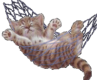

<html> <head> <title>Zadanie 1 </title> <script language="JavaScript"> function WinOpen_Siepka() { window.open("obraz.html","okienko","toolbar=no,directories=no,menubar=no,height=280,width=160,top=200,left=200"); } function okno_zamknij_Siepka() { window.close() } </script> </head> <body> <form> <input type="button" name="przycisk" value="Nowa Strona" onclick="WinOpen_Siepka(' ')"> <input type="button" name="przycisk" value="Zamknij Okno" onclick="okno_zamknij_Siepka(' ')"> </form> </body> </html>
<html> <head> <meta charset="utf-8"> <script type="text/javascript"> function okno_zamknij_Siepka() { window.close() } </script> </head> <body> <h1>Uwagi na temat JS </h1> <h2> Kiedy powstal JavaScript?</h2> <h3>JavaScript powstal w 1995 roku </h3> <h2>Dlaczego jest to jezyk skryptowy? </h2> <h3> JavaScript to jezyk skryptowy poniewaz nie musi zostac skompilowany do kodu maszynowego, aby mozna bylo zobaczyc efekty jego dzialania.</h3> <h2>Gdzie jest wkonywany JS?</h2> <h3>JavaScript jest wykonywany po stronie klienta </h3> <h2>Dlaczego jest to bezpieczne narzedzie?</h2> <h3> Jest to bezpieczne narzedzie poniewaz ma znacznie ograniczone uprawnienia dostepu do zasobow komputera, przy uzyciu ktorego przegladana jest dana strona, a wszelkie odwolania do funkcji i obiektow wykonywane sa w trakcie wykonywania programu.</h3> <h2>Czy jest to jezyk obiektowy, jesli tak dlaczego? </h2> <h3> Tak, javascript to jezyk obiektowy poniewaz Aplikacje w jezyku Java dzialaja w maszynie wirtualnej lub w przegladarce, a kod JavaScript jest uruchamiany wylacznie w przegladarkach.</h3> <h1> b)Przepisz linie kodu pod nimi wytlumaczenie: </h1> <h2> ‹input type="button" name="przycisk" value="Nowa Strona" onclick="WinOpen(' ')"› </h2> <h3>Ta linia kodu pozwoli na wyswietlenie przycisku za pomoca ktorego bedziemy mogli otworzyc nowe okno </h3> <h2>window.open("obraz.html","okienko","toolbar=no,directories=no,menubar=no,height=280,width=160,top=200,left=200");</h2> <h3> Funkcja ta pozwalana na otwarcie nowego okna ktore wyznaczymy o danych parametrach </h3> <h2>Wytlumaczenie przyciskow </h2> <h3> toolbar=no ->ukrywa standardowy pasek narzedzi <br></br> directories=no, -> ukrywa przyciski katalogow <br></br> menubar=no, ->ukrywa menu przegladarki <br></br> height=280, ->ustawia wysokosc okna <br></br> width=160, ->ustawia szerokosc okna <br></br> top=200, ->ustawia polozenie okna wzgledem gory ekranu <br></br> left=200 ->ustawia polozenie okna wzgledem lewej strony ekranu <br></br> window.close() -> funkcja dzieki ktorej bedziemy mogli zamknac okno </h3>  <input type="button" value="zamknij okno" onclick="okno_zamknij_Siepka()"/> </body> </html>